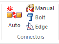
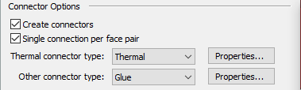
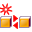
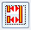
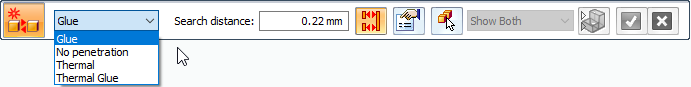
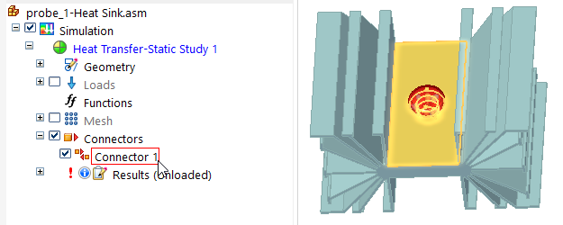
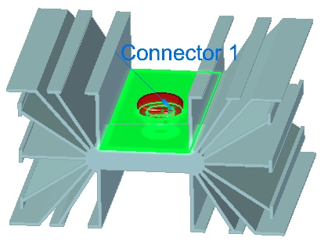

Assembly connectors
An assembly connector is a software mechanism that defines how a part is connected to another part or to the ground for meshing, without having to model the connection and connected behavior precisely.
Why do you use connectors?
In assemblies, you can identify connected edges, faces, surfaces, and cylinders. You can use assembly connectors to:
-
Simulate rigid connections, such as edge-to-edge or welded plates.
-
Simulate bolted parts.
-
Compensate for parts that bend and to specify tolerance.
-
Compensate for mid-surface thickness between two pieces of sheet metal.
-
Define thermal resistance between insulated faces and surfaces.
Types of assembly connectors
Every assembly connector consists of two or more connected elements, which vary with the type of connector you create.

-
Use the Auto and Manual commands to create Glue and no penetration contact connectors and Thermal connectors. These are the most frequently used types of connectors.
-
Use the Bolt command to create Bolt connectors.
-
Use the Edge command to create rigid or glue Edge connectors in sheet metal.
You can use the Tools tab→Model group→Weldment command to create welded connections between 2D sheet metal and 3D parts in the assembly model in Solid Edge. In Solid Edge Simulation, you can add glue connectors, and then mesh the model using a tetrahedral mesh.
Create connectors using the Create Study dialog box
The fastest and easiest way to create thermal, glue, and no penetration connectors is when you are creating a new study. In the Create Study dialog box, use the Connector Options section to specify that connectors are to be created automatically.
You also can verify or change the default NX Nastran values used to create these connectors by selecting the adjacent Properties button to open the Assembly Connector Properties dialog box.

The connectors are created automatically after you select the geometry to include in the study using the Define command. Connectors are created based on the mate relationships between parts, as defined in the assembly model itself.
To learn how to do this, see Create connectors based on assembly relationships.
Create connectors using the Auto connector command
The Simulation tab→Connectors group→Auto command

creates thermal, glued, and no penetration connectors between faces or surfaces. Use the Auto command to:-
Automatically select and create connections between some parts or all parts in the study.
-
If you use the Select All Components option , Solid Edge Simulation automatically identifies the faces on all component bodies that are within a specified search distance of each other. Then, you can accept or reject face-pair connection candidates before the connections are created.
-
-
Create a single connector or multiple connectors between the faces or surfaces of the parts.
-
The decision to use the One Connector Per Component Pair option

, or to allow multiple connectors to be created for each connector, is primarily a management issue. Fewer connectors with multiple faces are easier to modify. On the other hand, if you want more granular control, such as setting different search distances for each set of faces, or using some glue connectors and some no penetration connectors, it may be better to have many individual connectors.
-
The Auto connector command uses the Auto command bar to specify and create the connections.
If you use the Auto command to define connectors for a thermal coupled study, you must select the command twice. Select it once to define thermal connectors for the thermal analysis, and select it again to define structural connectors for the linear static analysis.

For more information, see Create assembly connectors using the Auto command.
Create connectors using the Manual command
Like the Auto command, the Simulation tab→Connectors group→Manual command creates thermal, glued, and no penetration contact connections between faces or surfaces. However, the Auto command may find too many faces, or it may not find the faces you do want to connect. Therefore, use the Manual connector command when you want to explicitly connect this face to that face.
By default, the Manual connector command places a single connector between two faces or surfaces that you select. The first selection is the target side of the connection. The second selection is the source side of the connection.
For manual connectors, you can choose the same face or surface to be both the target and the source sides of the connection. You may want to do this when a sheet metal part is bent, so that one end comes into contact with the other end and they are welded together.
To connect multiple faces or surfaces with a single connector, use the Select Multiple option  on the Assembly Connector command bar.
on the Assembly Connector command bar.

Use the dynamic input box in the graphics window to specify the maximum separation distance between the target and source face sets.
For more information, see Create manual connections between faces or surfaces.
Working with assembly connectors
Defined connectors are listed in the Simulation pane→Connectors node. You can identify what type of connector it is based on its icon and name. For example, thermal, glue, and no penetration connectors are preceded by the icon and are named Connector 1, Connector 2, Connector 3.
Bolt connectors are named Bolt Connection 1, Bolt Connection 2.
Edge connectors are named Edge Connector 1, Edge Connector 2.
If you hover over the connector name in the Simulation pane, the corresponding connection faces highlight in the graphics window.

To edit a connector, double-click the connector name in the Simulation pane, or click the edit definition handle in the graphics window. This displays the associated command bar options for you to modify the connector inputs.

To remove one or more connectors completely, use the Delete command on the shortcut menu of a connector selected in the Simulation pane.
How do I
Create connectors based on assembly relationshipsCreate assembly connectors using the Auto command
Create manual connections between faces or surfaces
Replace target and source connection regions
Change connector region direction
Learn more
Target and source connector regionsAssembly connector handles, labels, and symbols
Glue and no penetration contact connectors
Thermal connectors
Look up more details
Auto command barAssembly Connector command bar
Assembly Connector Properties dialog box